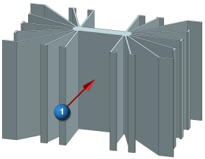
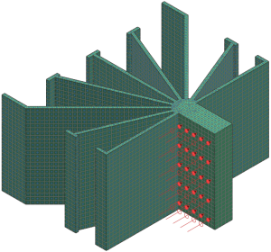
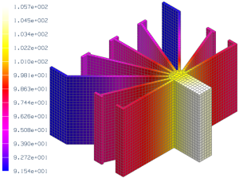

Thermal analysis project
Advanced Simulation possesses the capability to solve steady-state thermal problems like the following.
Objective
The heat sink shown below is used to cool an integrated circuit (IC). When mounted to the heat sink, the IC covers the entire mounting face. Use the SOL 153 Steady State Nonlinear Heat Transfer solution sequence to calculate the mounting face temperature required for the heat sink to dissipate 74 W of heat to 25 C air.
|

|
 indicates mounting face
indicates mounting face
Required data
|
Property |
Value |
|
Part |
heat_sink.prt |
|
Solution sequence |
SOL 153 Steady State Nonlinear Heat Transfer |
|
Idealization |
The body and boundary conditions are symmetric about two planes. Model one quarter of the body as indicated |
|
Material |
2014 Aluminum |
|
Mesh |
CHEXA8 Element size 1.5 mm 3D swept mesh |
|
Constraints |
Apply a convective constraint to all surfaces except the mounting face and the planes of symmetry Use a convection coefficient of 8.0 W/m2-C and an air temperature of 25 C Planes of symmetry are adiabatic. Surfaces without thermal loads or constraints behave adiabatically |
|
Loads |
Apply a uniform heat flux of 0.0297 W/mm2 to the mounting face to simulate a total heat input of 74 W |

Notes
To use symmetry:
-
Promote the body in the idealized part.
-
Split the body along the planes of symmetry.
-
In the FEM, turn off the display of the unused polygon bodies.
Expected Results
The calculated temperature distribution (in C) is shown below.

The average mounting face temperature needed for the heat sink to dissipate 74 W of heat is about 105 C. You obtain this temperature using the averaging feature of the Identify Results command.
-
Under the Results tab, in the Post Processing group, select the Identify Results command.
-
In the Identify dialog box, from the Pick list, select Feature Face.
-
Select the mounting face.
Completed project
For your reference, a completed model for this project is located in the ..\projects\solved_project_models folder.